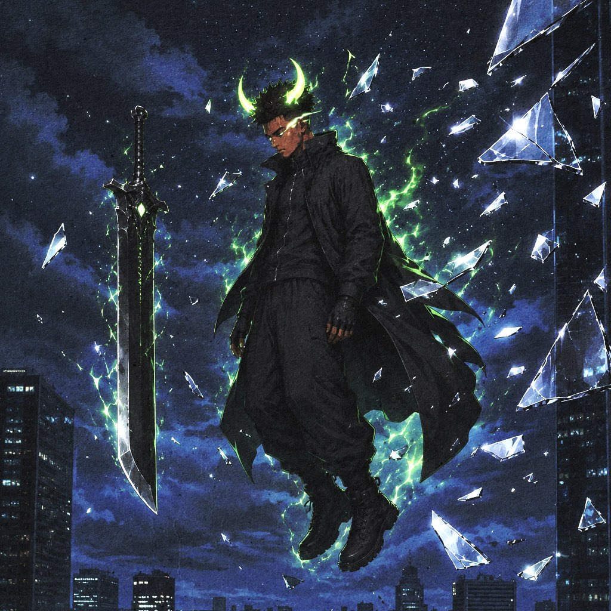
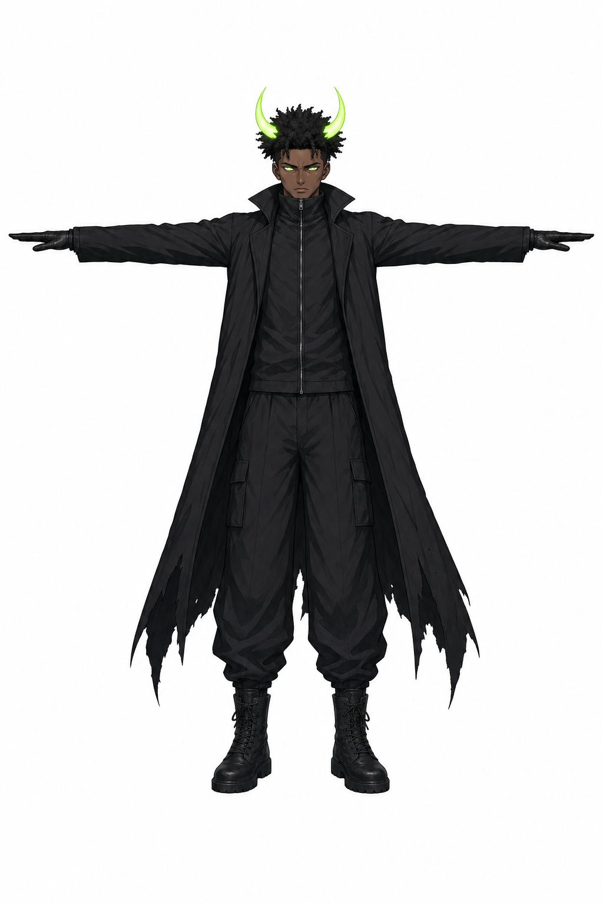
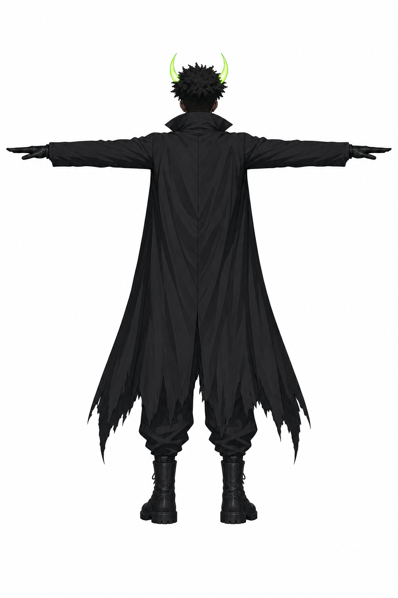
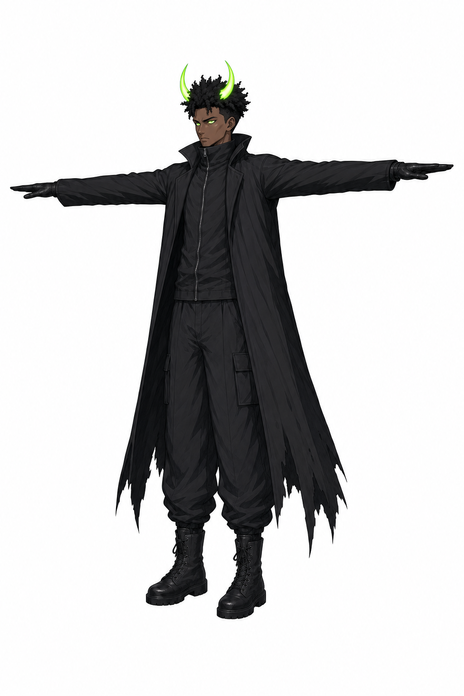
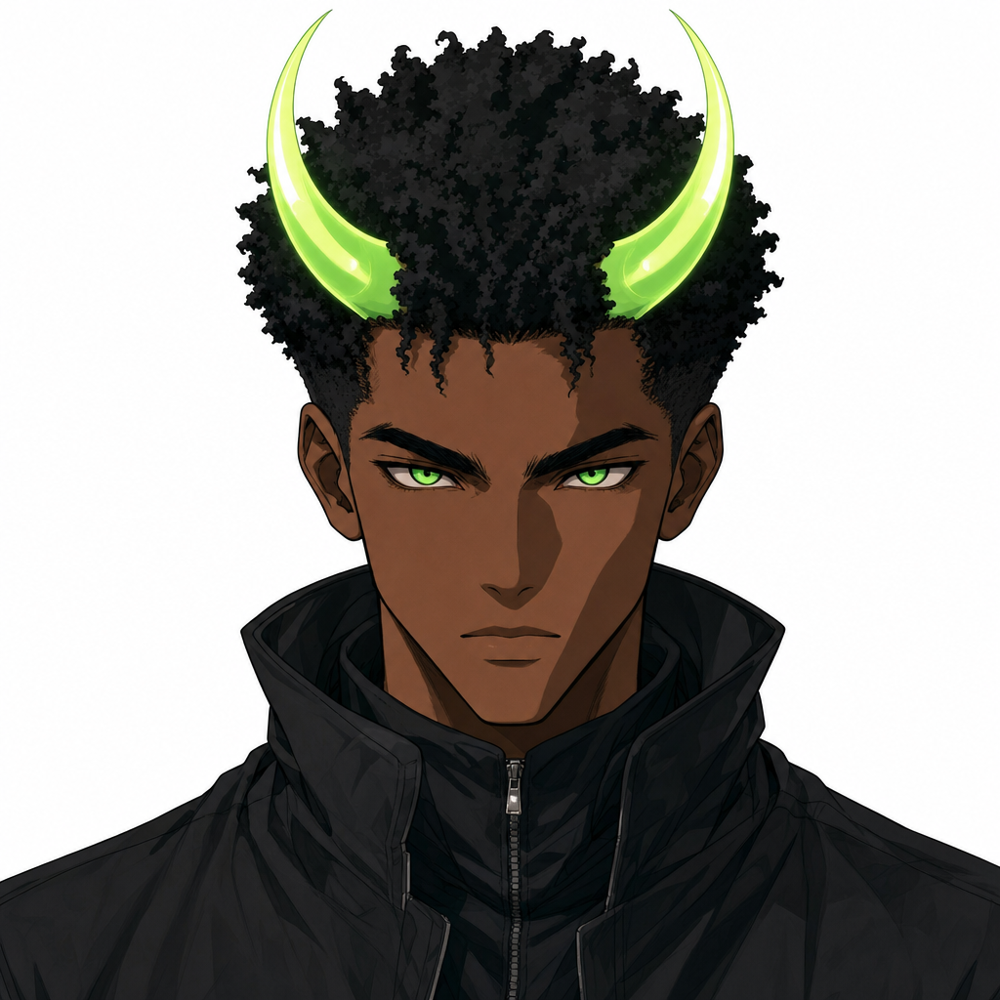
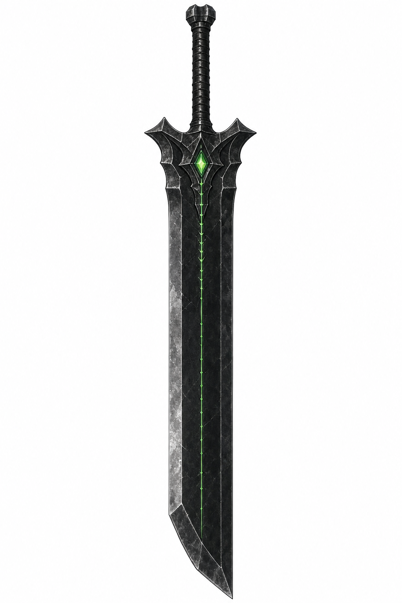
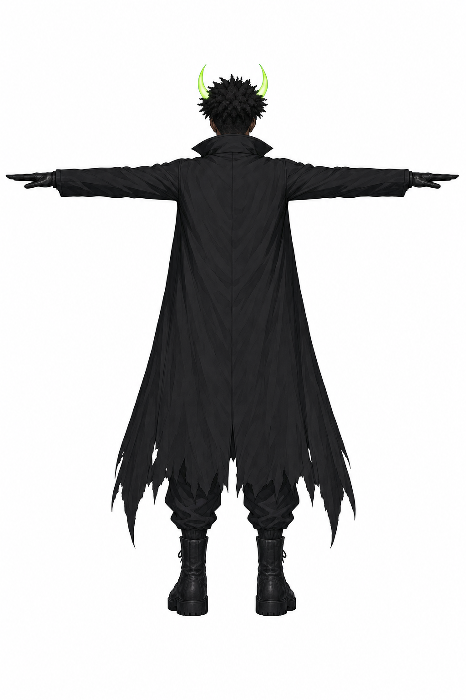
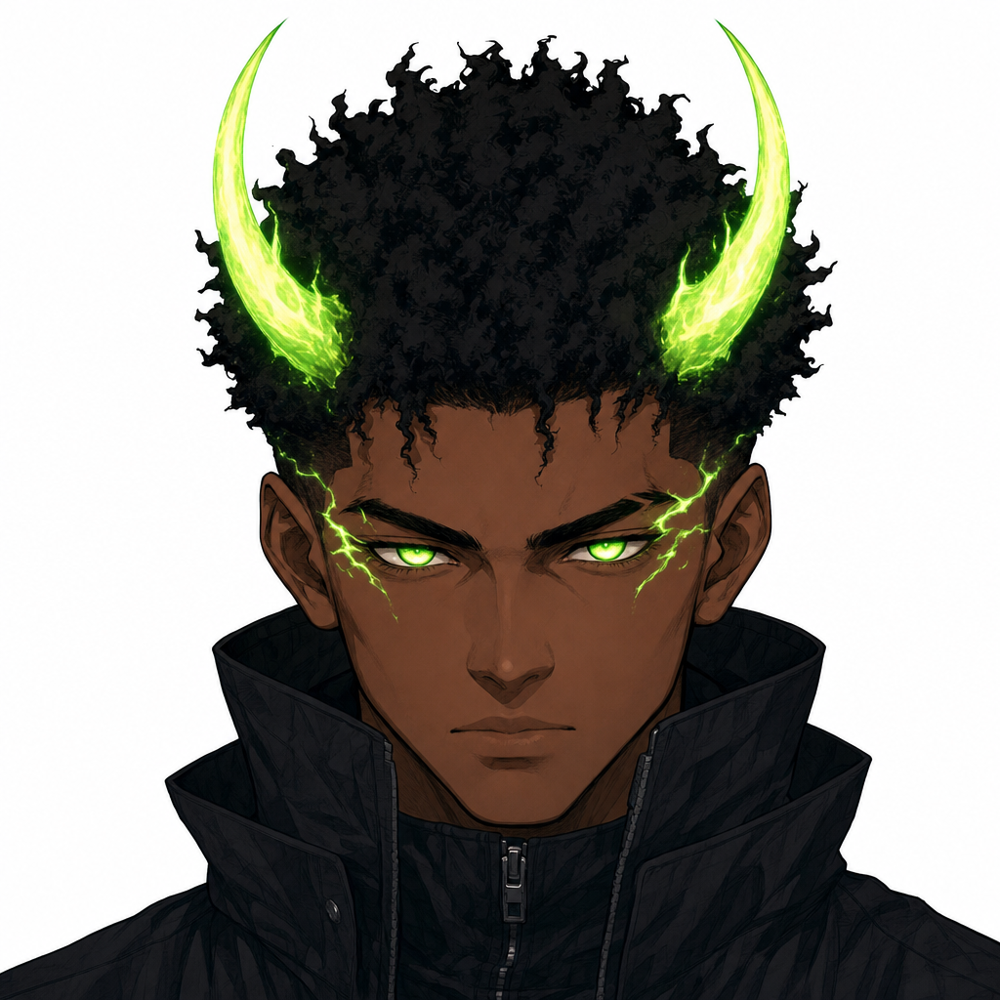

Ansem exclusive avatar — reference set for Meshy (approval gate)
Character views are generated CLEAN (no sword, no effects) so the auto-rig can't skin blade
geometry to arm bones — the greatsword is its own asset, attached to the skeleton in engine (same idea as
Tekk's wings, but as a separate mesh). Green horns + eyes stay emissive. Strict horizontal T-pose per the
armspan hard gate.
Source art (pasted reference)

source-ref (Downloads/ansem.jpg)
Proposed Meshy set — character (front · back · 3q · face)

front

back (v2 — horns fixed inward)

3/4 diagonal

face (v2 — clean skin, smooth horns)
Greatsword — separate Meshy asset

sword side profile (image-to-3D w/ symmetry)
Rejected first rolls (for the record)

back v1 — horn tips diverged outward (impossible vs front)

face v1 — flame horns + lightning face marks (would bake into texture)